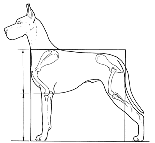

При первом взгляде на породистую собаку обычно рассматривают отдельные ее части: голову, окрас, переднюю и заднюю часть, хвост. По мере более внимательного изучения происходит переход к восприятию собаки в целом. "Собака в целом" не означает, что типичные черты породы менее важны. Это значит, что типаж породы определяется всей собакой, а не только отдельными частями.
Сбалансированная, цельная собака не просто имеет хорошие отдельные или все вместе части. Эти части должны находиться в правильном соотношении друг с другом. Стандарт описывает дога так: "...его строение в целом должно быть сбалансированным...." и "...Это всегда единое целое - Аполлон среди собак..."